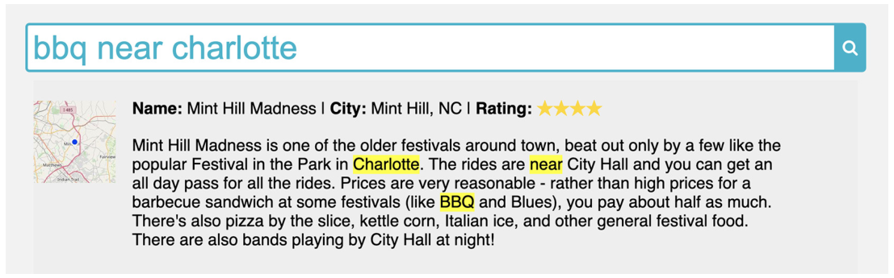
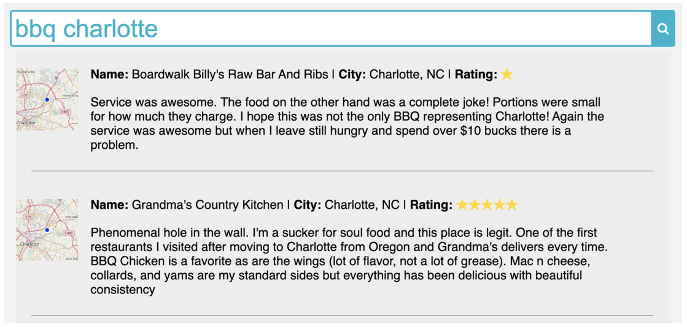
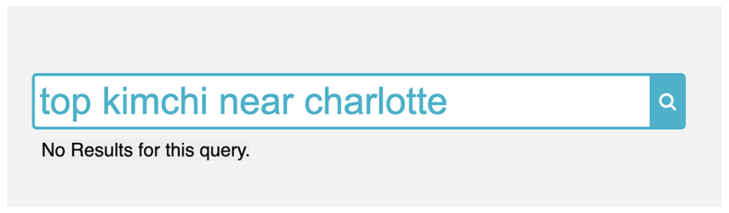
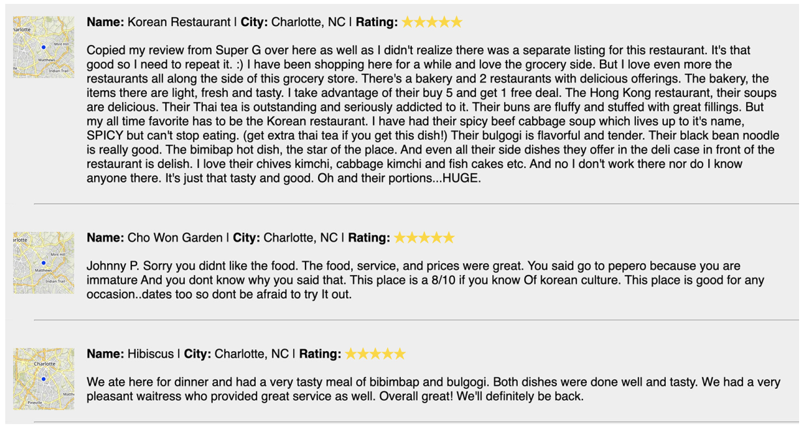
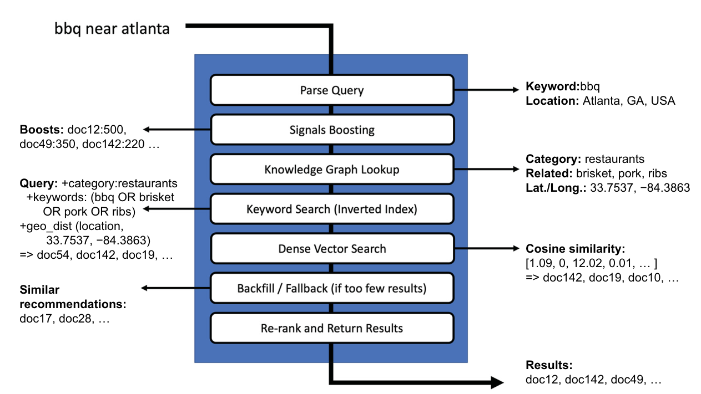
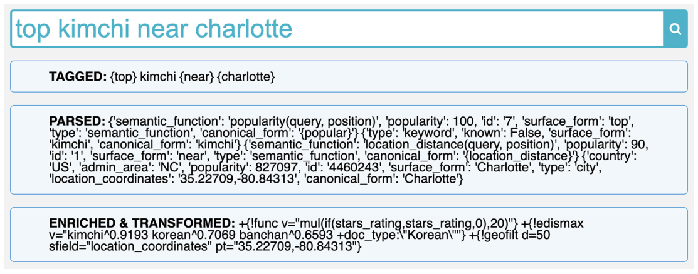
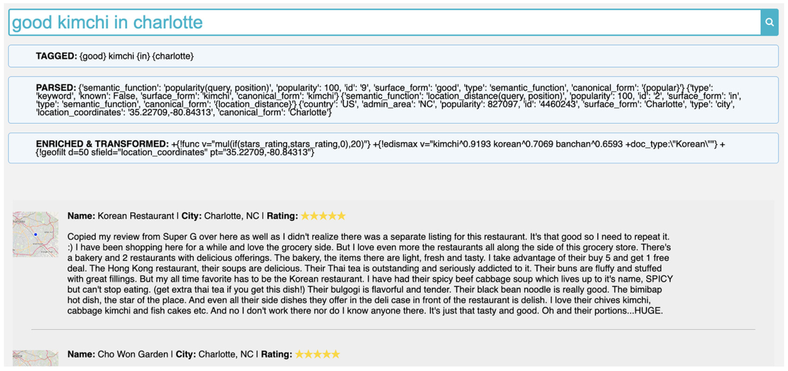

관계를 발견했다
지식 그래프와 SKG로 단어 사이의 관계, 관련어, 분류를 알아냈습니다.
사용자가 쓴 단어를, 사용자가 원한 검색 조건으로.top kimchi near charlotte 한 문장이 어떻게 관련성 높은 리뷰 검색으로 바뀌는지 따라갑니다.
검색어의 모든 단어가
“문서에 있어야 하는 단어”는 아니다.
top은 평점을, near는 거리를, charlotte는 좌표를 뜻합니다. kimchi는 도메인 지식으로 관련 음식과 분류까지 확장할 수 있습니다.
넓은 표와 코드는 좌우로 밀어서 볼 수 있습니다.
7장은 새 알고리즘 하나를 소개하는 장이 아니라, 앞에서 배운 기법을 실제 검색 과정으로 묶는 장입니다. 원문 p.161–164 ↗
지식 그래프와 SKG로 단어 사이의 관계, 관련어, 분류를 알아냈습니다.
구문·오탈자·대체 표기와 질의의 문맥별 의미를 학습했습니다.
그 지식을 입력 질의에 적용해 검색 조건을 바꾸고 결과를 반환합니다.
이 장의 중심은 명시적 엔티티 사전 + 의미 함수 + SKG + 기존 검색 색인입니다. 임베딩을 이용한 밀집 벡터 검색도 시맨틱 검색의 한 방식이며, 본격적인 LLM·임베딩 구현은 13–15장에서 다룹니다.
| 용어 | 쉽게 말하면 | 이 장의 예 |
|---|---|---|
| 엔티티(Entity) | 이름과 속성을 가진, 시스템이 알고 있는 대상 | Charlotte라는 도시와 그 좌표 |
| 표면형(Surface form) | 사용자가 실제로 입력할 수 있는 표기 | top, good, heystack |
| 정규형(Canonical form) | 여러 표기를 묶는 대표 표현 | top과 good → {popular} |
| 질의 트리(Query tree) | 검색어를 역할과 속성이 있는 노드로 바꾼 구조 | 함수·키워드·도시 노드의 순서 있는 리스트 |
| 의미 함수(Semantic function) | 주변 노드를 보고 검색 조건을 바꾸는 규칙 | near + 도시 → 거리 필터 |
| SKG | 검색 색인에서 관련어와 분류를 찾는 시맨틱 지식 그래프 | kimchi → korean, banchan, Korean |
전체 그림은 02 → 03에서 확인할 수 있습니다. 구현은 Listing 7.5부터 원문 코드와 출력을 순서대로 따라가며 자세히 설명합니다. 주요 코드는 펼쳐 두었으며, 각 코드 아래에 변수와 중간 상태 해설을 덧붙였습니다.
사용자가 bbq near charlotte를 입력했습니다. 원하는 것은 “Charlotte 근처의 바비큐 음식점”입니다. 그런데 모든 단어를 필수로 매칭하면 다음처럼 해석됩니다.
bbq AND near AND charlottenear까지 리뷰 본문에 들어 있어야 하므로, 책의 데이터셋에서는 리뷰 하나만 일치합니다. 그마저 바비큐 음식점이 아니라, 다른 BBQ 축제를 언급한 축제 리뷰입니다.

bbq charlotte로 바꾸면 결과는 늘어납니다. 그래도 첫 결과는 별점 1점이고, 다른 결과의 bbq chicken은 전형적인 훈제 바비큐가 아닌 바비큐 소스를 쓴 요리일 수 있습니다. 좋은 음식점이어도 리뷰 본문에 charlotte가 없으면 검색되지 않습니다.
| 질의 | 책의 관찰 | 아직 해결하지 못한 문제 |
|---|---|---|
bbq near charlotte | 축제 리뷰 1개 | 관계어 near를 필수 키워드로 처리 |
bbq charlotte | 더 많은 결과 | 음식의 의미·평점·실제 위치를 충분히 반영하지 못함 |
top kimchi near charlotte | 기본 키워드 검색은 0개 | 내용어와 기능어를 구분하지 못함 |

실패 사례는 모든 단어를 요구하는 기본 검색을 기준으로 합니다. 모든 어휘 검색이 항상 이런 결과를 내는 것은 아닙니다. 이 장이 보여주는 개선점은 단어를 지우는 데서 더 나아가 단어의 역할을 검색 조건으로 옮기는 것입니다.
“Charlotte 근처에서 평이 좋은 김치 관련 음식점을 찾고 싶다.” 하나의 문장 안에 서로 다른 세 가지 검색 의도가 들어 있습니다. 원문 p.168–170 ↗
리뷰 별점을 점수로 환산해 관련도에 반영
김치와 관련된 음식 표현, Korean 카테고리
Charlotte 좌표를 중심으로 반경 50km
near와 charlotte는 함께 하나의 거리 조건이 됩니다.| 원래 표현 | 해석 | 검색에서 하는 일 |
|---|---|---|
top | stars_rating × 20 | 스코어링: 평점에 따른 점수 추가 |
kimchi | kimchi^0.9193 korean^0.7069 banchan^0.6593 | 매칭·스코어링: 관련 표현까지 검색 |
| SKG가 찾은 분류 | doc_type:"Korean" | 필터링: Korean 카테고리로 제한 |
near charlotte | 35.22709,-80.84313, 반경 50km | 필터링: 실제 좌표를 기준으로 제한 |
여기서 term^weight는 “그 단어를 해당 가중치로 반영”한다는 표기입니다. kimchi라는 단어가 없는 리뷰도 korean이나 banchan 같은 관련 표현을 통해 후보가 될 수 있습니다.
모든 단어를 요구해 검색 결과가 없습니다.

책의 화면에는 평점 5점인 Charlotte의 한국 음식점 리뷰들이 나타납니다. 위치와 음식의 맥락도 맞습니다.
관찰된 결과입니다. 이 쿼리가 “반드시 5점만”, “반드시 Charlotte 시 안만” 반환하도록 강제하는 것은 아닙니다.

원문 예제를 단계별로 보여주는 시각화입니다. 검색 엔진을 실행하거나 새 결과를 생성하지 않습니다.
top, near, charlotte는 엔티티 사전에 있습니다. 등록되지 않은 kimchi는 keyword 노드로 보존합니다.
{top} kimchi {near} {charlotte}
[semantic_function, keyword, semantic_function, city]두 질의는 이 예제의 규칙에서 같은 검색 조건으로 바뀝니다. in과 near가 일반적으로 같은 뜻이라는 의미는 아닙니다.
| 단계 | 해결하는 질문 | 핵심 산출물 |
|---|---|---|
| 파싱 | 무엇이 함수·내용어·도시인가? | 유형과 메타데이터가 있는 query_tree |
| 보강 | 평점·거리·관련 음식은 어떻게 반영할까? | 의미 함수 결과 + skg_enriched 노드 |
| 변환 | Solr가 이 의미를 어떻게 실행할까? | type: transformed, syntax: solr, query |
| 검색 | 어떤 리뷰가 조건에 맞고 더 관련 있는가? | 필터링·스코어링을 거친 리뷰 목록 |
모델을 끼우거나 단계 순서를 바꾸면서 효과를 비교할 수 있어야 합니다.
질의 분류·관련어·클릭 부스트 등, 문제에 맞는 모델을 적절한 위치에 둡니다.
이해하지 못한 키워드도 검색하고, 결과가 부족하면 부분 매칭이나 추천으로 보완할 수 있습니다.

bbq near atlanta입니다. 실제 구현 예제는 이보다 범위가 작은 어휘 검색 + 지식 그래프의 결합입니다.어휘 검색은 모르는 단어라도 색인에 있으면 매칭할 수 있습니다. 지식 그래프는 엔티티와 관계를, 밀집 벡터는 임베딩의 유사성을 활용합니다. 여러 방식으로 찾은 결과를 합치고 재랭킹하는 구조도 가능합니다.
검색 대상은 웹에서 모은 제품·업체 리뷰입니다. 식당이나 매장처럼 물리적 위치가 있는 업체는 위치 정보도 활용합니다. 책의 출력은 리뷰 192,138개, 명시적 엔티티 21개, 도시 엔티티 137,581개를 색인합니다.
reviews사용자에게 반환할 리뷰 문서의 색인입니다. 같은 색인을 SKG로 탐색해 관련어와 카테고리도 얻습니다.
entities질의에서 인식할 표기·정규형·유형·의미 함수·도시 좌표를 담은 명시적 지식 사전입니다.
| 필드 | 담고 있는 정보 | 이 장에서의 역할 |
|---|---|---|
id, business_name | 리뷰 식별자, 업체명 | 문서 식별·결과 표시 |
content | 리뷰 본문 | 키워드 매칭·SKG 관련어 탐색 |
city, state | 도시·주 | 위치 정보와 필드 검색 |
categories | 업체 분류 | 예제의 검색·SKG 구문에서는 doc_type을 사용 |
stars_rating | 1–5점 리뷰 별점 | top의 부스트 값 |
location_coordinates | 위도·경도 | 50km 지리 필터 |
reviews_collection = engine.create_collection("reviews")
reviews_data = reviews.load_dataframe("data/reviews/reviews.csv")
reviews_collection.write(reviews_data)
# 책의 출력: Successfully written 192138 documentsentities_collection = engine.create_collection("entities")
entities_dataframe = from_csv("data/reviews/entities.csv")
cities_dataframe = cities.load_dataframe("data/reviews/cities.csv")
entities_collection.write(entities_dataframe)
entities_collection.write(cities_dataframe)start_reviews_search_webserver()
# 아래는 별도의 Jupyter 셀에서 실행
%%html
<iframe src="http://localhost:2345/search" width="100%" height="800"></iframe>기존 책 실습 환경의 함수와 서버를 전제로 한 코드입니다. 이 요약 HTML에는 검색 서버가 포함되어 있지 않습니다.
수치는 책에 기록된 출력이며 여기서 데이터셋 색인을 다시 실행한 결과는 아닙니다. 원문 출력에 Wiping "reviews" collection이 있으므로 실습은 책 전용 환경에서 진행하세요.
파싱의 목표는 입력을 무조건 잘게 쪼개는 것이 아닙니다. 알고 있는 단어·구문을 엔티티로 찾고, 모르는 텍스트도 그대로 보존하는 것입니다. 원문 p.171–178 ↗
haystackhaystack confheystack
haystack conference
서로 다른 표기를 같은 행사로 연결
event
나중에 행사 이름 필드를 검색하는 조건으로 변환
| surface_form | canonical_form | type | popularity | 의미 |
|---|---|---|---|---|
near | {location_distance} | semantic_function | 90 | 공간적 거리 |
near | {text_distance} | semantic_function | 10 | 텍스트 내 거리라는 다른 해석 |
in | {location_distance} | semantic_function | 100 | 같은 위치 함수에 연결 |
top / good / best / popular | {popular} | semantic_function | 각 100 | popularity(query, position) 실행 |
violet | violet | color | 100 | 색상 |
violet crown | violet crowne | brand | 100 | 대체 표기를 같은 브랜드로 통합 |
heystack | haystack conference | event | 100 | 오탈자를 행사 이름으로 연결 |
다른 예로 amin → admin은 오탈자, cto → chief technology officer는 약어 정규화입니다. 하지만 cto는 cancelled-to-order일 수도 있습니다. 정규화와 다의어 해소는 함께 고려해야 합니다.
책은 Solr의 Text Tagger를 사용합니다. 알려진 구문 목록을 FST(Finite State Transducer)라는 압축된 탐색 구조로 구성해, 입력 텍스트에서 해당 구문을 빠르게 찾습니다. 이 장은 FST 자체의 구현보다 태거를 검색 파이프라인에 연결하는 데 집중합니다.
결과적으로는 그렇지만, 역할을 나누어 이해해야 합니다. /tag의 TaggerRequestHandler는 요청을 받아 입력을 분석하고 name_tag 사전 필드에서 일치 구간을 찾는 실행 창구입니다. FST는 핸들러 설정이 아니라 그 필드의 postingsFormat: FST50에 의해 만들어지는 용어·포스팅 저장 구조입니다. 따라서 핸들러가 요청마다 FST를 새로 만드는 것이 아니라, 색인할 때 준비된 FST 기반 구조를 조회 시 간접적으로 사용합니다.
FST는 입력을 왼쪽부터 읽고, 현재 상태와 다음 입력에 따라 다른 상태로 이동하면서 출력을 만듭니다. 유한한 수의 상태만 가지므로 복잡한 자유 문장을 모두 이해하지는 못하지만, 사전에 정의된 표현을 매우 빠르고 예측 가능하게 찾아내거나 정규화하는 데 강합니다.
2020년 이후 영화
{
"type": "movie",
"release_year": {"operator": ">", "value": 2020}
}정규식이 2020년 이후라는 패턴과 연도 값을 찾는다면, FST는 상태 전이를 따라가며 입력 표현을 release_year > 2020 같은 출력 표현에 연결할 수 있습니다. 즉, 정규식 기반 추출은 명시적 파싱의 한 도구이고, FST는 그런 규칙들을 상태 전이와 출력으로 컴파일해 실행하는 방식으로 볼 수 있습니다.
| 구분 | 입력 | 출력·역할 |
|---|---|---|
| 일반적인 규칙 FST | 2020년 이후 | release_year > 2020처럼 입력 문자열을 다른 기호열이나 태그로 변환 |
이 장의 FST50 | 사전의 top, near, Charlotte | 용어와 포스팅을 메모리 효율적인 FST 기반 구조로 저장해 빠른 사전 매칭을 지원 |
TaggerRequestHandler | top kimchi near charlotte | 입력을 분석하고 사전 필드와 대조하여 일치 위치와 엔티티 ID·메타데이터를 반환 |
| 뒤의 Python 파이프라인 | 태그와 엔티티 후보 | top의 부스트, near + city의 거리 필터 등 실제 의미 관계를 조립 |
이 예제의 FST/Text Tagger는 등록된 표면형을 찾아 후보 엔티티에 연결하는 단계에 가깝습니다. near와 Charlotte를 결합해 “도시 반경 50km”라는 관계를 만드는 일은 뒤의 질의 트리와 의미 함수가 담당합니다. 자유로운 문장에서 새로운 주어–관계–목적어를 발견하는 범용 관계 추출은 보통 통계 모델, 신경망·LLM, 의존 구문 분석을 함께 사용합니다.
FST/WFST는 지금도 음성 인식·합성, 텍스트 정규화, 형태소 분석, 사전 기반 엔티티 인식, 자동완성처럼 규칙과 어휘가 비교적 명확하고 지연 시간·메모리·재현성이 중요한 곳에서 널리 쓰입니다. 반면 열린 도메인의 엔티티 관계를 FST 하나로 모두 구조화하는 경우는 드뭅니다. 실제 시스템은 대체로 “FST/사전으로 확실한 표현 처리 → 모델로 모호성 해소와 관계 추론”의 하이브리드 구조를 사용합니다.
더 읽기 · Apache Solr Tagger Handler 공식 문서 · Google Pynini 문서와 활용 분야 · Pynini 논문 · Google Kestrel TTS 정규화 사례 · NVIDIA NeMo WFST 정규화 문서 · Finstreder: FST 기반 intent/entity 추출
이 단락은 원문 7장의 설명을 보완하기 위한 추가 학습 자료입니다. 특히 Solr 공식 문서는 FST50을 Text Tagger에 유리한 압축된 메모리 내 FST 구조로 설명합니다.
/entities/tag는 entities 컬렉션의 태깅 엔드포인트입니다.여기부터는 원문 코드를 따라 읽는 상세 해설입니다.
태거 설정 → 엔티티 응답 → 질의 트리 → 의미 함수 → SKG → 검색 구문 → 실제 결과 순으로 이어집니다. 같은 top kimchi near charlotte가 단계마다 어떻게 달라지는지 입력·출력·중간 값으로 확인합니다.
먼저 entities에 넣은 표면형을 빠르게 찾을 수 있도록 Solr를 설정합니다. 이 코드는 사용자 질의를 실행하는 코드가 아니라, 사용자 질의를 해석할 준비를 하는 설정입니다. 책에서는 engine.create_collection("entities") 내부에서 이 준비가 이루어집니다.
큰 덩어리는 두 개입니다. add_tag_type_commands는 태깅용 필드와 분석기를 정의하고, add_tag_request_handler_config는 그 필드를 조회할 /tag 엔드포인트를 정의합니다. 먼저 전체 코드를 보고, 바로 아래에서 각 덩어리를 원문의 흐름대로 풀어보겠습니다.
add_tag_type_commands = [{
"add-field-type": {
"name": "tag",
"class": "solr.TextField",
"postingsFormat": "FST50",
"omitNorms": "true",
"omitTermFreqAndPositions": "true",
"indexAnalyzer": {
"tokenizer": {"class": "solr.StandardTokenizerFactory"},
"filters": [
{"class": "solr.EnglishPossessiveFilterFactory"},
{"class": "solr.ASCIIFoldingFilterFactory"},
{"class": "solr.LowerCaseFilterFactory"},
{"class": "solr.ConcatenateGraphFilterFactory",
"preservePositionIncrements": "false"}]},
"queryAnalyzer": {
"tokenizer": {"class": "solr.StandardTokenizerFactory"},
"filters": [{"class": "solr.EnglishPossessiveFilterFactory"},
{"class": "solr.ASCIIFoldingFilterFactory"},
{"class": "solr.LowerCaseFilterFactory"}]}}
},
{"add-field": {"name": "name_tag", "type": "tag",
"stored": "false"}},
{"add-copy-field": {"source": "surface_form",
"dest": ["name_tag"]}}]
add_tag_request_handler_config = {
"add-requesthandler" : {
"name": "/tag",
"class": "solr.TaggerRequestHandler",
"defaults": {
"field": "name_tag",
"json.nl": "map",
"sort": "popularity desc",
"matchText": "true",
"fl": "id,canonical_form,surface_form,type,semantic_function,popularity,country,admin_area,location_coordinates"
}
}
}제공된 1.index-datasets.ipynb의 Listing 7.5입니다. %load 주석만 생략했습니다. PDF의 마지막 fl 항목은 *_p를 포함한 표기이고, 노트북은 location_coordinates를 명시합니다. 위 코드는 노트북의 전체 설정을 그대로 사용했습니다.
tag는 필드 유형, name_tag는 실제 필드다"add-field-type" 블록은 “어떤 방식으로 텍스트를 분석하고 색인할 것인가”라는 규칙에 tag라는 이름을 붙입니다. 이 이름 자체가 엔티티의 내용을 담지는 않습니다. 아래의 "add-field"가 실제 저장할 필드 name_tag를 만들고, 그 필드가 방금 정의한 tag 유형을 사용하게 합니다.
그리고 "add-copy-field"가 surface_form 값을 name_tag로 복사합니다. 예를 들어 사전에 들어 있는 top, near, Charlotte가 이 경로로 태깅용 색인에 들어갑니다. 사용자가 쓰는 표기는 surface_form으로 찾고, 무엇으로 해석할지는 엔티티의 canonical_form과 type을 보고 결정합니다. 그래서 canonical_form 대신 surface_form을 복사합니다.
| 이름 | 종류 | 담당하는 일 |
|---|---|---|
tag | 필드 유형 | 텍스트 분석기와 FST 기반 색인 방식 정의 |
name_tag | 태깅용 필드 | 표면형을 분석한 결과를 색인하고 입력 질의와 매칭 |
/tag | 요청 핸들러 | 입력을 받아 name_tag에 등록된 엔티티를 찾아 반환 |
tag = 설계도소문자화 같은 분석 규칙과 FST50 저장 방식을 정의합니다. 엔티티 값 자체는 들어 있지 않습니다.
name_tag = 실제 서랍surface_form이 복사되어 색인되는 실제 필드입니다. Text Tagger가 이 서랍에서 표현을 찾습니다.
/tag = 검색 창구사용자 쿼리를 받아 name_tag에서 일치 표현을 찾도록 실행하는 Solr 엔드포인트입니다.
타입과 필드의 관계는 프로그래밍 언어의 String name과 비슷합니다. tag가 String 같은 타입이라면, name_tag는 그 타입으로 선언한 실제 변수입니다. /tag는 그 변수를 조회하는 함수 호출 창구에 가깝습니다.
Charlotte 저장name_tag로 복사indexAnalyzer는 사전에 등록하는 표기에 적용합니다. StandardTokenizerFactory로 텍스트를 나누고, 영어 소유격 처리·ASCII 정규화·소문자 처리를 거칩니다. 끝에 있는 ConcatenateGraphFilterFactory는 단어들의 연결을 태거가 활용할 수 있도록 만드는 필터입니다. haystack conference처럼 여러 단어로 된 엔티티도 하나의 등록 구문으로 찾을 수 있어야 하기 때문입니다.
queryAnalyzer는 들어오는 사용자 질의를 분석합니다. 여기에도 소유격·ASCII·소문자 처리를 맞춰 둡니다. 등록 시의 표현과 조회 시의 표현이 서로 맞아야 Charlotte라는 표기를 charlotte 입력에서 찾을 수 있습니다. 다만 입력 질의 전체를 하나의 등록 구문으로 만들려는 것은 아니므로, 원문 설정의 queryAnalyzer에는 마지막 구문 결합 필터가 없습니다.
FST50은 이 예제에서 FST를 활용하는 색인 형식입니다. omitNorms, omitTermFreqAndPositions는 일반적인 본문 관련도 계산용 정보를 줄이는 설정입니다. 이 필드의 주된 목적은 문서의 BM25 점수를 계산하는 것이 아니라 등록된 표현이 입력의 어느 부분에 나타났는지 찾는 것입니다. 태거 응답의 문자 오프셋과, 여기서 생략하는 색인의 용어 위치 정보는 구분해서 읽어야 합니다.
"field": "name_tag"는 어느 필드를 대상으로 매칭할지 정합니다. "matchText": "true"는 실제 입력에서 일치한 문자열도 반환하게 합니다. "fl"은 이후 파싱과 보강에 필요한 엔티티 속성들을 요청합니다. id로 후보를 연결하고, type으로 처리 방식을 고르고, semantic_function이나 location_coordinates로 의미 해석을 이어 갈 수 있습니다.
fl은 field list, 즉 매칭된 엔티티 문서에서 응답으로 돌려받을 속성 목록입니다. 무엇을 name_tag로 복사할지는 add-copy-field의 source: surface_form이 이미 결정합니다. 또한 태깅 대상을 정하는 값은 field: name_tag입니다.
| 설정 | 뜻 | 하지 않는 일 |
|---|---|---|
field: name_tag | 입력과 대조할 사전 필드 선택 | 응답 필드 선택이 아님 |
matchText: true | 실제로 일치한 입력 문자열도 반환 | 새 엔티티 생성이 아님 |
sort: popularity desc | 여러 후보의 반환 우선순위 결정 | 문맥 기반 의미 확정이 아님 |
fl: id,... | 매칭된 엔티티에서 반환할 속성 선택 | name_tag로 복사하지 않음 |
"stored": "false"는 name_tag의 값을 응답용 원문으로 별도 저장하지 않는다는 뜻이지, 그 필드를 색인하지 않는다는 뜻이 아닙니다. 응답에 필요한 원래 표기와 속성은 surface_form 등 다른 엔티티 필드에서 가져옵니다.
"sort": "popularity desc"로 더 흔한 해석을 우선하도록 설정하지만, 다음 예제처럼 한 태그에 후보 ID가 여럿 반환될 수 있습니다. 실제로 하나의 의미를 선택하는 동작은 뒤의 Listing 7.8에서 다시 확인할 수 있습니다. 여기까지는 엔티티를 찾을 준비이며, 아직 리뷰 검색 결과를 반환한 것은 아닙니다.
/entities/tag는 어떻게 만들어지며 다른 엔진에는 무엇이 있을까?add-requesthandler는 Solr의 Config API 기능입니다. Solr가 제공하는 solr.TaggerRequestHandler 클래스를 이 컬렉션의 /tag라는 이름으로 등록합니다. 그래서 전체 호출 경로는 보통 /solr/entities/tag가 됩니다. Solr가 Text Tagger 구현을 제공하고, 이 예제의 설정이 그 구현을 HTTP 엔드포인트로 노출한 것입니다.
| 엔진 | 기본 확장 방식 | 이 예제와의 차이 |
|---|---|---|
| Solr | add-requesthandler로 설치된 RequestHandler를 경로에 등록 | 내장 Text Tagger를 /tag로 바로 구성할 수 있음 |
| Elasticsearch | 내장 REST API·분석기 또는 Java 플러그인 | 동일한 add-requesthandler나 Text Tagger는 없음. 사용자 정의 REST 엔드포인트는 플러그인 개발·설치가 필요 |
| OpenSearch | Search Pipeline·플러그인·확장 기능 | 요청 변환 파이프라인은 제공하지만 Solr Text Tagger와 동일한 내장 핸들러는 아님 |
단순한 동의어 치환이라면 Elasticsearch/OpenSearch 분석기를 사용할 수 있지만, 쿼리 전체에서 여러 엔티티의 오프셋과 메타데이터를 찾아 반환하려면 보통 애플리케이션 계층의 엔티티 인식기나 사용자 정의 플러그인을 둡니다. Elasticsearch의 Enrich Processor는 다른 색인의 정보를 문서에 붙이는 기능이지만 주 사용 시점이 문서 수집 단계라서, 이 예제의 쿼리 Text Tagger와는 목적이 다릅니다.
엔진별 공식 문서 · Solr Tagger Handler · Elasticsearch 플러그인과 사용자 정의 REST 엔드포인트 · Elasticsearch Enrich Processor · OpenSearch Search Processors
# Listing 7.6
query = "top kimchi near charlotte"
entities_collection = engine.get_collection("entities")
extractor = get_entity_extractor(entities_collection)
query_entities = extractor.extract_entities(query)
print(query_entities)engine.get_collection("entities")로 가져오는 것은 리뷰 컬렉션이 아니라 엔티티 사전입니다. get_entity_extractor는 이 사전을 사용하는 추출기를 만들고, extract_entities(query)가 실제 질의 문자열을 태거에 보냅니다. 이때 kimchi를 먹을 만한 식당을 찾는 요청은 아직 하지 않습니다. 지금 묻는 것은 “이 문자열 안에 사전에 등록된 표현이 무엇인가?”입니다.
아래는 제공 노트북에 저장된 응답 전체입니다. 먼저 tags에서 짧은 매칭 정보를 보고, 같은 ID를 entities에서 찾아 상세 속성을 읽는 구조입니다. 태그가 세 개라고 엔티티 레코드도 세 개인 것은 아닙니다. 여러 해석 후보가 있으므로 응답에는 더 많은 엔티티가 들어 있습니다.
{'query': 'top kimchi near charlotte',
'tags': [{'startOffset': 0, 'endOffset': 3, 'matchText': 'top', 'ids': ['7']},
{'startOffset': 11, 'endOffset': 15, 'matchText': 'near', 'ids': ['1', '5']},
{'startOffset': 16,
'endOffset': 25,
'matchText': 'charlotte',
'ids': ['4460243', '4612828', '4680560', '4988584', '5234793']}],
'entities': [{'semantic_function': 'location_distance(query, position)',
'popularity': 90,
'id': '1',
'surface_form': 'near',
'type': 'semantic_function',
'canonical_form': '{location_distance}'},
{'semantic_function': 'text_distance(query, position)',
'popularity': 10,
'id': '5',
'surface_form': 'near',
'type': 'semantic_function',
'canonical_form': '{text_distance}'},
{'semantic_function': 'popularity(query, position)',
'popularity': 100,
'id': '7',
'surface_form': 'top',
'type': 'semantic_function',
'canonical_form': '{popular}'},
{'country': 'US',
'admin_area': 'NC',
'popularity': 827097,
'id': '4460243',
'surface_form': 'Charlotte',
'type': 'city',
'location_coordinates': '35.22709,-80.84313',
'canonical_form': 'Charlotte'},
{'country': 'US',
'admin_area': 'TN',
'popularity': 1506,
'id': '4612828',
'surface_form': 'Charlotte',
'type': 'city',
'location_coordinates': '36.17728,-87.33973',
'canonical_form': 'Charlotte'},
{'country': 'US',
'admin_area': 'TX',
'popularity': 1815,
'id': '4680560',
'surface_form': 'Charlotte',
'type': 'city',
'location_coordinates': '28.86192,-98.70641',
'canonical_form': 'Charlotte'},
{'country': 'US',
'admin_area': 'MI',
'popularity': 9054,
'id': '4988584',
'surface_form': 'Charlotte',
'type': 'city',
'location_coordinates': '42.56365,-84.83582',
'canonical_form': 'Charlotte'},
{'country': 'US',
'admin_area': 'VT',
'popularity': 3861,
'id': '5234793',
'surface_form': 'Charlotte',
'type': 'city',
'location_coordinates': '44.30977,-73.26096',
'canonical_form': 'Charlotte'}]}노트북에 저장된 원래 출력입니다. PDF의 응답보다 country 같은 일부 메타데이터가 더 포함되어 있습니다. 도시 선택에 쓰는 ID·인구·좌표는 원문과 같습니다.
| matchText | 문자 범위 | 엔티티 IDs | 해석 |
|---|---|---|---|
top | [0, 3) | ["7"] | 후보 1개 |
kimchi | 태그 없음 | 없음 | 미등록 텍스트 → keyword로 보존 |
near | [11, 15) | ["1", "5"] | 공간적 거리 / 텍스트 거리 |
charlotte | [16, 25) | ["4460243", "4612828", "4680560", "4988584", "5234793"] | 서로 다른 도시 5개 |
반환값의 query는 원래 문자열, tags는 매칭 위치와 후보 ID 목록, entities는 각 후보의 속성 레코드입니다. 태그를 찾았다고 의미가 하나로 정해진 것은 아닙니다.
책의 구현은 후보 중 popularity가 가장 큰 것을 선택합니다. 도시에서는 이 값에 인구를 넣었습니다. 따라서 이 예제에서는 NC의 Charlotte를 선택합니다.
| 후보 | popularity | location_coordinates | 선택 |
|---|---|---|---|
| Charlotte, NC | 827,097 | 35.22709,-80.84313 | ✓ 최댓값 |
| Charlotte, TN | 1,506 | 36.17728,-87.33973 | — |
| Charlotte, TX | 1,815 | 28.86192,-98.70641 | — |
| Charlotte, MI | 9,054 | 42.56365,-84.83582 | — |
| Charlotte, VT | 3,861 | 44.30977,-73.26096 | — |
일반 엔티티의 popularity는 이 예제에서 수동 지정값입니다. 실제로는 클릭 신호·문서 빈도·사용자 위치·질의 문맥 등을 추가해 해석을 개선할 수 있습니다. 표의 인구는 현재 통계가 아닙니다.
중괄호는 “엔티티 사전에 있는 표현”이라는 표시입니다. kimchi가 미등록이라는 것은 음식의 의미를 앞으로도 모른다는 뜻이 아닙니다. 다음 단계에서 SKG로 보강합니다.
semantic_functioncanonical_form: {popular} · 함수: popularity(query, position)
keywordsurface_form과 canonical_form은 모두 kimchi
semantic_functioncanonical_form: {location_distance} · popularity: 90
cityNC · US · 좌표 35.22709,-80.84313 · popularity: 827097
태그를 표시한 문자열과 다음의 질의 트리는 같은 원본 응답에서 각각 만든 두 가지 표현입니다. 실제 코드의 generate_query_tree(query_entities)는 중괄호 문자열을 다시 파싱하지 않습니다. 좌표나 함수 같은 메타데이터를 잃지 않으려고 태거의 원래 응답을 직접 받습니다.
def generate_tagged_query(extracted_entities):
query = extracted_entities["query"]
last_end = 0
tagged_query = ""
for tag in extracted_entities["tags"]:
next_text = query[last_end:tag["startOffset"]].strip()
if len(next_text) > 0:
tagged_query += " " + next_text
tagged_query += " {" + tag["matchText"] + "}"
last_end = tag["endOffset"]
if last_end < len(query):
final_text = query[last_end:len(query)].strip()
if len(final_text):
tagged_query += " " + final_text
return tagged_query
tagged_query = generate_tagged_query(query_entities)
print(tagged_query)제공된 2.semantic-search.ipynb의 해당 Listing 코드를 보존했습니다. 노트북의 %load 주석만 생략했습니다.
last_end는 “앞에서 처리한 태그가 끝난 문자 위치”입니다. 다음 태그의 시작 전까지 남은 텍스트를 먼저 붙이고, 태그 자체는 중괄호로 감쌉니다. 이 순서 덕분에 사전에 없는 kimchi가 사라지지 않습니다.
| 이번 태그 | 남은 구간 | 이번에 붙이는 것 | 새 last_end |
|---|---|---|---|
top [0,3) | query[0:0] → 빈 문자열 | {top} | 3 |
near [11,15) | query[3:11] → " kimchi " | kimchi {near} | 15 |
charlotte [16,25) | query[15:16] → 공백 | {charlotte} | 25 |
.strip()은 태그 사이에서 잘라 낸 문자열의 앞뒤 공백을 제거합니다. 그래서 두 번째 반복에서는 " kimchi "가 "kimchi"가 되고, 세 번째 반복의 공백만 있는 구간은 빈 문자열이 되어 붙이지 않습니다. 마지막에 last_end < len(query)를 검사하는 이유는 마지막 태그 뒤에 남은 미등록 텍스트도 놓치지 않기 위해서입니다. 현재 예제는 마지막 태그의 끝이 25이고 질의 길이도 25라서 남는 부분이 없습니다.
원래 함수는 각 조각 앞에 공백을 덧붙이므로 반환 문자열의 맨 앞에도 공백 하나가 생깁니다. 본문의 보기 좋은 표시에서는 이 선행 공백을 생략했지만, 코드 자체는 그대로 보존했습니다.
표시용 문자열은 사람이 확인하기 편하지만 “Charlotte의 좌표는 무엇인가?”, “near 다음 노드가 도시인가?” 같은 질문을 바로 처리하기 어렵습니다. 그래서 이번에는 각 조각을 문자열로 이어 붙이는 대신 dict로 만들고, 그 객체들을 순서대로 query_tree 리스트에 넣습니다.
def generate_query_tree(extracted_entities):
query = extracted_entities["query"]
entities = {entity["id"]: entity for entity
in extracted_entities["entities"]}
query_tree = []
last_end = 0
for tag in extracted_entities["tags"]:
best_entity = entities[tag["ids"][0]]
for entity_id in tag["ids"]:
if (entities[entity_id]["popularity"] >
best_entity["popularity"]):
best_entity = entities[entity_id]
next_text = query[last_end:tag["startOffset"]].strip()
if next_text:
query_tree.append({"type": "keyword",
"surface_form": next_text,
"canonical_form": next_text})
query_tree.append(best_entity)
last_end = tag["endOffset"]
if last_end < len(query):
final_text = query[last_end:len(query)].strip()
if final_text:
query_tree.append({"type": "keyword",
"surface_form": final_text,
"canonical_form": final_text})
return query_tree
parsed_query = generate_query_tree(query_entities)
display(parsed_query)제공된 2.semantic-search.ipynb의 해당 Listing 코드를 보존했습니다. 노트북의 %load 주석만 생략했습니다.
첫 번째 딕셔너리 내포 {entity["id"]: entity for entity in extracted_entities["entities"]}는 응답의 엔티티 리스트를 ID 기준 조회표로 바꿉니다. 이제 entities["1"]로 near의 위치 해석 레코드를, entities["4460243"]으로 NC의 Charlotte 레코드를 바로 가져올 수 있습니다. tags에는 후보의 ID만 있으므로, 이 연결이 필요합니다.
best_entity = entities[tag["ids"][0]]로 첫 후보를 임시 최선으로 정합니다. 이어서 모든 후보 ID를 돌며 popularity가 더 큰 후보를 만나면 교체합니다. near에서는 90인 위치 함수가 10인 텍스트 거리 함수보다 우선하고, charlotte에서는 인구 827097인 NC의 도시가 선택됩니다. 엄밀하게는 비교가 >이므로 같은 값이면 먼저 고른 후보를 유지합니다.
문자 구간을 자르는 방법은 Listing 7.7과 같습니다. near 앞의 구간에서 kimchi가 나오면 {"type": "keyword", "surface_form": "kimchi", "canonical_form": "kimchi"}를 추가하고, 그 다음에 near의 엔티티 객체를 추가합니다. 이렇게 해야 원문의 top → kimchi → near → charlotte 순서가 그대로 보존됩니다.
| 처리한 태그 | 추가한 노드 | 현재 query_tree의 순서 |
|---|---|---|
| top | 선택한 top 함수 | [top] |
| near | 미등록 kimchi, 선택한 near 함수 | [top, kimchi, near] |
| charlotte | NC의 Charlotte 엔티티 | [top, kimchi, near, Charlotte] |
[{'semantic_function': 'popularity(query, position)',
'popularity': 100,
'id': '7',
'surface_form': 'top',
'type': 'semantic_function',
'canonical_form': '{popular}'},
{'type': 'keyword', 'surface_form': 'kimchi', 'canonical_form': 'kimchi'},
{'semantic_function': 'location_distance(query, position)',
'popularity': 90,
'id': '1',
'surface_form': 'near',
'type': 'semantic_function',
'canonical_form': '{location_distance}'},
{'country': 'US',
'admin_area': 'NC',
'popularity': 827097,
'id': '4460243',
'surface_form': 'Charlotte',
'type': 'city',
'location_coordinates': '35.22709,-80.84313',
'canonical_form': 'Charlotte'}]여기서 surface_form과 canonical_form은 단어를 가리키는 정보이고, type은 다음 단계가 이 노드를 어떻게 처리할지 결정하는 분기 기준입니다. 함수 노드는 실행 대상으로, keyword는 SKG 보강 대상으로, city는 위치 함수가 사용할 데이터로 넘어갑니다. 이 시점에는 의미를 실행한 것이 아니라 실행에 필요한 구조를 마련한 것입니다.
태그 사이에 남은 텍스트와 마지막 태그 뒤의 텍스트를 keyword 노드로 추가합니다. 이 텍스트는 여러 단어로 된 구문일 수도 있습니다. 사전이 불완전해도 검색을 이어 갈 수 있는 첫 번째 폴백입니다.
의미 함수는 단어 하나를 다른 단어로 바꾸는 사전 규칙보다 넓은 역할을 합니다. 주변 노드의 유형과 위치를 확인하고, 노드를 바꾸거나 합치면서 검색 의도를 표현합니다. 원문 p.179–182 ↗
| 이름 | 이 단계에서 담은 값 | 원문 예제에 대입하면 |
|---|---|---|
처음의 query | 사용자가 입력한 문자열 | "top kimchi near charlotte" |
query_tree | 파싱된 노드 리스트 | [top 함수, kimchi, near 함수, Charlotte] |
의미 함수 안의 query | 리스트를 담은 딕셔너리 | {"query_tree": query_tree} |
position | 지금 처리 중인 노드의 인덱스 | top은 0, near는 2 |
특히 의미 함수의 인자인 query는 원래의 문자열이 아닙니다. Listing 7.11에서 {"query_tree": query_tree}라는 감싸는 객체를 만들어 전달합니다. 이 객체는 기존 리스트를 그대로 참조하므로, 함수가 query["query_tree"]를 수정하면 바깥의 query_tree도 바뀝니다.
popular, top, best, good은 정규형 {popular}에 연결됩니다. 이 함수는 뒤에 다른 노드가 있을 때만 실행됩니다. 책이 드는 대비는 top mountain과 mountain top입니다.
별점이 없으면 0, 별점이 1–5이면 20–100을 기여합니다.
def popularity(query, position):
if len(query["query_tree"]) - 1 > position:
query["query_tree"][position] = {
"type": "transformed",
"syntax": "solr",
"query": '+{!func v="mul(if(stars_rating,stars_rating,0),20)"}'
}
return True
return False원문 코드의 동작을 유지하고 들여쓰기·줄바꿈을 정돈했습니다.
리스트 길이가 4이면 마지막 인덱스는 3입니다. top은 0번 노드이므로 len(query["query_tree"]) - 1 > position은 3 > 0, 즉 참입니다. 반면 mountain top처럼 top이 마지막 노드라면 이 조건이 거짓이 되어 False를 반환합니다. 이 조건은 “뒤에 노드가 존재한다”는 최소한의 문맥 검사이며, 모든 자연어 문맥에서 top의 의미를 판별하는 규칙까지 구현한 것은 아닙니다.
query["query_tree"][position] = {...}는 기존 함수 노드에 속성을 조금 추가하는 코드가 아닙니다. 해당 자리를 새로운 딕셔너리로 통째로 바꿉니다. 이제 그 자리는 type이 semantic_function인 “해석 대기 중 노드”가 아니라, type이 transformed인 “Solr 구문으로 변환한 노드”입니다.
syntax: "solr"는 이 노드의 query 값이 어떤 엔진의 구문인지 알려줍니다. return True는 함수의 변환이 성공했다는 뜻입니다. 아직 Solr에 보내지 않았으므로 “조건에 맞는 문서가 있다”는 뜻은 아닙니다.
| 부분 | 의미 | 별점 5인 문서에 대입 |
|---|---|---|
stars_rating | 현재 문서의 리뷰 별점 | 5 |
if(stars_rating,stars_rating,0) | 값이 있으면 별점, 없으면 0 사용 | 5 |
mul(...,20) | 위 값에 20을 곱함 | 100 |
{!func v="..."} | v의 표현식을 함수 쿼리로 계산 | 이 문서의 평점 기여 점수 |
별점이 4인 리뷰라면 같은 식이 80을 만듭니다. 숫자 20은 예제에서 평점을 검색 점수에 반영하기 위해 정한 배율입니다. 이 자체가 학습된 최적 가중치라는 뜻은 아닙니다. kimchi 관련 텍스트 점수와 함께 작동하므로, 평점 점수만으로 최종 순위를 계산했다고 생각하면 다음 검색 결과를 잘못 읽게 됩니다.
이 코드는 별점이 낮은 리뷰를 제외하지 않습니다. 별점으로 계산한 점수를 검색 관련도에 반영하는 부스트입니다. 최종 순위에는 텍스트 관련도 등 다른 점수도 영향을 줄 수 있습니다.
near, in, by는 위치 함수에 연결됩니다. 현재 노드 뒤에 city가 있을 때 그 도시의 좌표를 꺼내 거리 필터를 만듭니다. 그 뒤 도시 노드를 제거하고, near 노드를 거리 조건으로 교체합니다.
def location_distance(query, position):
if len(query["query_tree"]) - 1 > position:
next_entity = query["query_tree"][position + 1]
if next_entity["type"] == "city":
query["query_tree"].pop(position + 1)
query["query_tree"][position] = {
"type": "transformed",
"syntax": "solr",
"query": create_geo_filter(
next_entity["location_coordinates"],
"location_coordinates", 50)
}
return True
return False
def create_geo_filter(coordinates, field, distance_KM):
clause = f'!geofilt d={distance_KM} sfield="{field}" pt="{coordinates}"'
return "+{" + clause + "}"위치 함수는 원문의 흐름을 유지했습니다. PDF의 필터 생성 f-string은 중괄호 표기에 문제가 있어, 보조 함수는 제공 저장소의 문자열 조합 방식을 사용했습니다.
현재 near의 위치는 2입니다. 먼저 뒤에 노드가 있는지 검사하고, next_entity = query["query_tree"][position + 1]로 3번 노드를 꺼냅니다. 이 노드는 Listing 7.8에서 선택한 Charlotte 엔티티이며 type == "city"이므로 위치 해석에 성공할 수 있습니다.
이어 pop(position + 1)로 도시 노드를 리스트에서 제거합니다. 도시의 정보를 버리려는 것이 아닙니다. next_entity 변수는 이미 그 엔티티 객체를 가리키고 있으므로, 다음 줄에서도 그 좌표를 사용할 수 있습니다. “near”와 “도시”라는 두 노드를 하나의 거리 조건으로 합치기 위해 리스트에서 도시의 별도 자리를 없앤 것입니다.
이제 near가 있던 2번 자리를 거리 필터로 바꿉니다. 도시는 이미 거리 필터 안에 반영되었으므로 이후 변환 단계에서 다시 +city:"Charlotte"로 처리하지 않습니다. 만약 도시 노드를 남겨 두면 의도한 반경 조건에 더해 도시 필드 조건까지 중복해서 적용할 수 있습니다.
+{!geofilt d=50 sfield="location_coordinates" pt="35.22709,-80.84313"}| 부분 | 무엇을 뜻하는가? | 값의 출처 |
|---|---|---|
geofilt | 지리적 범위로 문서를 거르는 조건 | 위치 의미 함수 |
d=50 | 반경 50km | 함수 호출에 지정한 상수 50 |
sfield="location_coordinates" | 각 리뷰의 좌표를 읽을 필드 | reviews 문서의 위치 필드 |
pt="35.22709,-80.84313" | 반경의 중심점, 위도·경도 | 선택한 Charlotte 엔티티의 좌표 |
따라서 본문에 charlotte라는 글자가 없어도 좌표가 범위 안이면 위치 조건을 만족합니다. 반대로 리뷰에 Charlotte라는 단어가 있어도 실제 좌표가 멀리 떨어져 있으면 위치 조건에서 제외됩니다. 이 함수는 반경 안팎을 판정하며, 가까운 순서로 정렬하는 거리 점수까지 추가하는 코드는 아닙니다.
| 원문 표현 | 조건 확인 | 결과 |
|---|---|---|
top kimchi | top 다음에 노드가 있음 | 평점 부스트 생성 |
mountain top | top 다음에 노드가 없음 | 함수 실패 → 텍스트 해석으로 남음 |
near charlotte | 다음 노드가 city | 50km 거리 필터 생성 |
chief near officer | 다음 노드가 city가 아님 | 위치 함수 실패. 원문은 텍스트 거리 해석을 대안으로 설명 |
# Listing 7.11
def process_semantic_functions(query_tree):
position = 0
while position < len(query_tree):
node = query_tree[position]
if node["type"] == "semantic_function":
query = {"query_tree": query_tree}
command_successful = eval(node["semantic_function"])
if not command_successful:
node["type"] = "invalid_semantic_function"
position += 1
return query_tree함수 이름과 인자를 엔티티 데이터에 저장해 두고 실행 시점에 연결하는 방식입니다. 각 함수의 True/False 반환값으로 적용 성공 여부를 판단합니다.
top 엔티티의 semantic_function 값은 "popularity(query, position)"입니다. eval(node["semantic_function"])은 이 문자열을 현재 문맥에서 평가합니다. 바로 앞에서 만든 query와 현재 반복문의 position이 함수 인자로 사용되고, 이미 정의된 popularity 함수가 실행됩니다. near에서는 같은 방식으로 location_distance(query, position)가 호출됩니다.
책이 말하는 늦은 연결(late binding)은 이처럼 데이터에 적힌 함수와 실행 코드를 호출 시점에 연결한다는 뜻입니다. 실행 가능한 함수 자체는 환경에 정의되어 있어야 합니다. 사전에 존재하지 않는 함수 이름을 적는 것만으로 새로운 함수 구현이 자동으로 생기지는 않습니다.
| position | 현재 노드 | 실행 | 처리 후 상태 |
|---|---|---|---|
| 0 | top / semantic_function | popularity 실행 → True | 0번이 transformed로 교체, 길이 4 |
| 1 | kimchi / keyword | 함수가 아니므로 건너뜀 | 길이 4, keyword 유지 |
| 2 | near / semantic_function | location_distance 실행 → True | 3번 도시 제거, 2번 교체, 길이 3 |
| 3 | 없음 | 3 < 3이 거짓 | 반복 종료 |
도시 노드를 따로 순회해서 처리하는 것이 아닙니다. near를 처리하는 동안 도시가 소비되었기 때문에 반복문의 길이 조건도 바뀝니다. 이 시점의 유형 배열은 [transformed, keyword, transformed]입니다. 다음에 해야 할 일은 가운데 남은 keyword, 즉 kimchi를 도메인 지식으로 보강하는 것입니다.
함수가 False를 반환하면 현재 노드의 유형을 invalid_semantic_function으로 바꿉니다. 이 노드는 뒤의 enrich에서 keyword 확장 대상이 되지 않고, 최종 변환의 기본 분기에서 표면형 텍스트로 검색됩니다. “함수 해석에 실패했다”와 “해당 단어를 질의에서 삭제했다”는 서로 다른 상태입니다.
원문은 위치 해석 실패 시 낮은 우선순위의 text_distance 해석을 시도할 수 있다고 설명합니다. 다만 Listing 7.8은 이미 후보 하나만 고르고, Listing 7.11은 실패를 표시할 뿐 다음 후보 함수를 자동 재시도하지 않습니다. 그 동작까지 원하면 후보 보존·재시도 로직이 더 필요합니다.
명시적 엔티티 사전에 kimchi가 없어도 리뷰 색인에는 관련 지식이 있습니다. kimchi가 등장하는 문서들을 출발점으로, 관련 콘텐츠 단어와 문서 분류를 함께 탐색합니다.
content: kimchireviews 컬렉션을 SKG로 탐색
상위 관련어 4개kimchi · koreanbanchan · bulgogi
상위 분류 1개Korean
→ 검색 시 카테고리 조건으로 사용
{
"category": "Korean",
"term_vector": "kimchi^0.9193 korean^0.7069 banchan^0.6593 bulgogi^0.5497"
}가중치는 SKG 관련도 값이며 확률이나 음식점 품질 점수가 아닙니다. korean은 콘텐츠 단어, Korean은 분류 이름입니다.
다음은 원문 p.183의 검색어·분류·가중치를 그대로 옮긴 것입니다. bbq와 korean bbq는 일부 단어가 같아도 분류와 관련어가 달라집니다.
| 질의 | category | term_vector |
|---|---|---|
kimchi | Korean | kimchi^0.9193 korean^0.7069 banchan^0.6593 bulgogi^0.5497 |
bbq | Barbeque | bbq^0.9191 ribs^0.6187 pork^0.5992 brisket^0.5691 |
korean bbq | Korean | korean^0.7754 bbq^0.6716 banchan^0.5534 sariwon^0.5211 |
lasagna | Italian | lasagna^0.9193 alfredo^0.3992 pasta^0.3909 italian^0.3742 |
karaoke | Karaoke | karaoke^0.9193 sing^0.6423 songs^0.5256 song^0.4118 |
drive through | Fast Food | drive^0.7428 through^0.6331 mcdonald's^0.2873 window^0.2643 |
이 함수에는 reviews_collection과 "kimchi"가 들어갑니다. 엔티티 사전을 다시 조회하는 함수가 아닙니다. 리뷰 색인을 SKG로 사용해서, 그 리뷰들에 나타나는 관련 단어와 분류를 가져오는 함수입니다. 앞의 두 갈래 다이어그램이 코드의 어느 부분에 대응하는지 보면서 읽어봅시다.
def get_enrichments(collection, keyword, limit=4):
enrichments = {}
nodes_to_traverse = [{"field": "content",
"values": [keyword],
"default_operator": "OR"},
[{"name": "related_terms",
"field": "content",
"limit": limit},
{"name": "doc_type",
"field": "doc_type",
"limit": 1}]]
skg = get_semantic_knowledge_graph(collection)
traversals = skg.traverse(*nodes_to_traverse)
if "traversals" not in traversals["graph"][0]["values"][keyword]:
return enrichments
nested_traversals = traversals["graph"][0]["values"] \
[keyword]["traversals"]
doc_types = list(filter(lambda t: t["name"] == "doc_type",
nested_traversals))
if doc_types:
enrichments["category"] = next(iter(doc_types[0]["values"]))
related_terms = list(filter(lambda t: t["name"] == "related_terms",
nested_traversals))
if related_terms:
term_vector = ""
for term, data in related_terms[0]["values"].items():
term_vector += f'{term}^{round(data["relatedness"], 4)} '
enrichments["term_vector"] = term_vector.strip()
return enrichments
query = "kimchi"
get_enrichments(reviews_collection, query)제공된 2.semantic-search.ipynb의 해당 Listing 코드를 보존했습니다. 노트북의 %load 주석만 생략했습니다.
첫 번째 딕셔너리의 "field": "content", "values": [keyword]가 출발점입니다. keyword가 kimchi이면 content 필드에서 kimchi와 연결되는 문서들을 문맥으로 삼습니다. 바로 뒤에 들어 있는 리스트는 그 문맥에서 이어서 탐색할 두 방향을 묶습니다.
| 요청 위치 | 원문 설정 | 실제로 묻는 질문 |
|---|---|---|
| 출발점 | field: content | 이 키워드가 만들어 내는 문서 문맥은 무엇인가? |
| 하위 탐색 1 | name: related_terms | 그 문맥과 관련 높은 콘텐츠 단어 네 개는? |
| 하위 탐색 2 | name: doc_type | 그 문맥을 가장 잘 나타내는 분류 하나는? |
name과 field는 다른 역할입니다. name: "related_terms"는 나중에 응답에서 이 탐색 결과를 찾아낼 이름이고, field: "content"는 실제로 관련 단어를 찾을 색인의 필드입니다. related_terms라는 새로운 문서 필드를 미리 만들어 두어야 한다는 뜻은 아닙니다.
limit=4는 반환할 관련 단어의 수입니다. 원문 출력은 원래 키워드 kimchi도 그 네 개 안에 포함하므로, “원래 단어에 새 단어 네 개를 더한다”는 의미가 아닙니다. 이 예제에서는 kimchi와 추가 관련어 세 개, 총 네 개를 받습니다.
get_semantic_knowledge_graph(collection)로 reviews 컬렉션을 사용하는 SKG 인터페이스를 얻습니다. skg.traverse(*nodes_to_traverse)의 별표는 Python의 인자 펼치기입니다. 출발점과 그 아래 탐색 목록을 각각 인자로 넘깁니다. 실제 관련도를 찾는 작업은 이 호출 안에서 이루어지고, get_enrichments의 나머지 코드는 이미 얻은 결과를 검색 질의에 쓰기 편하게 정리합니다.
따라서 0.9193이나 0.7069가 이 함수 안의 별도 학습식으로 새로 계산되는 것은 아닙니다. 코드의 data["relatedness"]가 SKG가 돌려준 관련도 값이며, 여기서는 그것을 반올림해 검색 가중치 문자열에 넣습니다. 관련도 자체의 원리는 앞 장의 SKG 설명과 연결됩니다.
nested_traversals = traversals["graph"][0]["values"][keyword]["traversals"]왼쪽의 traversals 변수에는 전체 응답이 들어 있습니다. 그런데 가장 오른쪽의 ["traversals"]는 응답 내부에서 하위 탐색 목록을 가리키는 필드 이름입니다. 이름이 같아도 위치와 역할이 다릅니다.
| 차례 | 코드 | 선택하는 것 |
|---|---|---|
| 1 | traversals["graph"] | 전체 응답의 그래프 결과 |
| 2 | [0] | 이번 요청의 첫 출발 탐색 |
| 3 | ["values"][keyword] | 그 출발점 중 kimchi에 해당하는 결과 |
| 4 | ["traversals"] | 그 문맥에서 이어진 related_terms와 doc_type의 결과 목록 |
앞의 if "traversals" not in ... 검사는 그 키워드에 하위 탐색 결과가 없을 때 빈 enrichments 딕셔너리를 반환하도록 합니다. 이 함수는 “아무 보강도 하지 못했다”를 {}로 표현하고, 상위 함수가 원래 키워드를 보존할 수 있게 합니다.
doc_types = list(filter(lambda t: t["name"] == "doc_type",
nested_traversals))
if doc_types:
enrichments["category"] = next(iter(doc_types[0]["values"]))filter는 리뷰 문서를 직접 거르는 것이 아닙니다. 하위 탐색 결과들 중 name이 doc_type인 결과 덩어리를 선택합니다. 그 첫 결과의 values에서 첫 키를 꺼내면 원문 예제에서는 "Korean"입니다. 요청 단계에서 limit: 1로 상위 분류 하나를 요구했으므로, 이 코드가 따로 모든 분류의 점수를 비교하는 것은 아닙니다.
next(iter(...))는 딕셔너리의 첫 키를 가져오는 Python 표현입니다. Korean이라는 문자열의 첫 글자 K를 가져온다는 뜻이 아닙니다. 여기서 꺼낸 category는 다음 변환 단계에서 +doc_type:"Korean"이라는 검색 조건이 됩니다.
관련어도 같은 방식으로 name이 related_terms인 결과를 골라냅니다. .items()로 단어와 그 단어의 속성 객체를 하나씩 꺼내고, data["relatedness"]를 소수점 네 자리로 반올림합니다. f'{term}^{...} '는 단어, 캐럿 기호, 가중치, 구분용 공백을 이어 붙입니다.
| term | 반올림한 relatedness | 추가하는 문자열 |
|---|---|---|
| kimchi | 0.9193 | kimchi^0.9193 |
| korean | 0.7069 | korean^0.7069 |
| banchan | 0.6593 | banchan^0.6593 |
| bulgogi | 0.5497 | bulgogi^0.5497 |
마지막 .strip()은 누적 문자열 끝의 공백을 정리합니다. 이렇게 만든 term_vector는 Python 숫자 배열이 아니라, 단어 차원과 가중치를 표현하는 검색용 문자열입니다. 검색 엔진의 질의 파서가 이 표기를 읽어 각 단어의 가중치를 적용합니다.
bbq는 Barbeque 분류와 ribs·pork·brisket을 돌려주고, korean bbq는 Korean 분류와 banchan·sariwon 쪽으로 바뀝니다. bbq라는 단어가 겹쳐도 질의의 문맥을 추가하면 식별되는 도메인 개념이 달라진다는 예입니다.
lasagna에서 alfredo·pasta·italian이 나오는 것은 “라자냐와 관련 있는 음식·도메인”을 찾는 과정입니다. alfredo가 lasagna의 정확한 동의어라는 뜻은 아닙니다. karaoke의 sing·songs·song, drive through의 Fast Food와 mcdonald's·window 역시 도메인에서 함께 나타나는 의미적 맥락을 보여줍니다. 이런 구분을 이해해야 관련어 확장이 왜 재현율을 높이면서도 엉뚱한 결과를 늘릴 수 있는지 연결됩니다.
Listing 7.12의 시작 노드는 default_operator: "OR"를 사용합니다. 제공 노트북은 '"korean bbq"', '"drive through"'처럼 구문에 따옴표를 붙인 변형도 사용합니다. 여러 단어를 느슨하게 OR로 찾는지, 하나의 구문으로 찾는지에 따라 SKG의 출발 문서 집합과 결과가 달라질 수 있습니다.
# Listing 7.13
def enrich(collection, query_tree):
query_tree = process_semantic_functions(query_tree)
for item in query_tree:
if item["type"] == "keyword":
enrichments = get_enrichments(collection, item["surface_form"])
if enrichments:
item["type"] = "skg_enriched"
item["enrichments"] = enrichments
return query_tree이미 처리한 의미 함수는 다시 SKG 키워드 확장을 하지 않습니다. 아직 keyword인 노드만 보강하고, 결과가 없으면 원래 키워드를 유지합니다. 자주 쓰는 엔티티의 분류·관련어는 entities의 추가 필드에 미리 저장해 조회 비용을 줄일 수도 있습니다.
Listing 7.13은 지금까지 만든 두 보강 방식을 묶는 함수입니다. 첫 줄이 먼저 의미 함수를 처리하므로 루프를 시작할 때 노드 유형은 [transformed, keyword, transformed]입니다. 조건 item["type"] == "keyword"를 만족하는 것은 가운데 kimchi 하나뿐입니다.
| 노드 | 루프 시작 시 type | get_enrichments 호출 여부 | 루프 종료 시 type |
|---|---|---|---|
| 평점 조건 | transformed | 호출하지 않음 | transformed |
| kimchi | keyword | kimchi로 SKG 조회 | 성공하면 skg_enriched |
| 거리 조건 | transformed | 호출하지 않음 | transformed |
SKG 결과가 있으면 item["type"]을 바꾸고 item["enrichments"]를 추가합니다. 의미 함수가 노드를 통째로 교체했던 것과 달리, 여기서는 기존 노드의 표면형과 정규형을 유지하면서 속성을 덧붙입니다. 따라서 보강 후에도 원래 사용자가 입력한 단어가 무엇이었는지 알 수 있습니다.
# Listing 7.13 실행 후 kimchi 노드의 모습
# 원문 코드와 Listing 7.12 출력으로 재구성한 중간 상태
{
"type": "skg_enriched",
"surface_form": "kimchi",
"canonical_form": "kimchi",
"enrichments": {
"category": "Korean",
"term_vector": "kimchi^0.9193 korean^0.7069 banchan^0.6593 bulgogi^0.5497"
}
}반대로 get_enrichments가 빈 딕셔너리 {}를 반환하면 if enrichments가 거짓이므로 노드를 수정하지 않습니다. 여전히 keyword인 상태로 다음 단계에 넘겨, 원래 표면형으로 검색하도록 합니다. 보강이 실패해도 원래 검색 의도를 표현한 텍스트를 버리지 않는 것이 이 연결 방식의 장점입니다.
모든 미등록어를 무조건 확장하면 거짓 양성(false positive)이 늘어날 수 있습니다. 원문도 이 구현을 학습·실험용으로 설명합니다. 특히 상위 카테고리 하나를 필수 조건으로 쓰므로, 분류가 틀리면 관련 문서가 제외될 수 있습니다.
어휘/의미는 무엇을 기준으로 관련성을 판단하는지, 희소/밀집은 데이터를 어떤 벡터로 표현하는지에 관한 구분입니다. 두 구분을 같은 것으로 생각하면 이 장의 접근을 놓치기 쉽습니다.
| 방식 | 표현 | 어떻게 검색하는가? |
|---|---|---|
| 기본 어휘 검색 | 단어 차원의 희소 표현 | 색인의 단어 매칭과 BM25 같은 점수 |
| 이 장의 SKG 확장 | 관련 단어와 가중치의 희소 벡터 | 도메인 관계를 반영한 단어 확장·분류 필터 |
| SPLADE 계열 | 언어 모델 토큰과 가중치의 희소 벡터 | 문맥을 반영해 확장한 토큰끼리 매칭 |
| 밀집 임베딩 검색 | 의미를 압축한 밀집 벡터 | 벡터 이웃 탐색과 유사도 계산 |
SPLADE(Sparse Lexical and Expansion)는 사전 학습 언어 모델로 문맥을 반영한 토큰과 가중치를 생성합니다. 책은 대안 구현인 SPLADE++를 같은 검색어에 적용해 SKG 결과와 비교합니다.
| 비교 항목 | SKG | SPLADE++ 예제 |
|---|---|---|
| 지식의 출처 | 현재 리뷰 색인 | 사전 학습한 언어 모델 |
| 출력 단위 | 색인에 있는 실제 단어 | 모델의 토큰·서브워드 |
| lasagna 예 | lasagna, alfredo, pasta | las, ##ag, ##na 등 |
| 색인 준비 | 기존 콘텐츠 단어를 활용 | 문서도 같은 모델로 확장·표현해 호환되는 토큰을 색인해야 함 |
| 이 예제의 추가 출력 | category 분류도 탐색 | 코드에선 토큰별 가중치를 반환 |
| 문맥 반영 | 질의·문서 문맥을 탐색에 전달 가능 | 인코딩하는 입력 전체의 문맥을 반영 |
| 책에서 관찰한 특성 | 짧은 음식점 도메인 질의에 적합한 관련어 | 일반적 관련어와 서브워드, 일부 도메인 밖 토큰도 등장 |
이 예제의 SKG는 이미 음식점 리뷰를 바탕으로 작동합니다. 반면 비교한 SPLADE++ 모델은 그 색인으로 학습한 모델이 아닙니다. 원문은 도메인 파인튜닝으로 차이를 줄일 수 있다고 설명합니다.
여기서 책은 다른 질의 확장 방법을 비교합니다. 앞의 SKG 결과가 나온 뒤 반드시 SPLADE를 한 번 더 통과한다는 뜻은 아닙니다. 이 장의 기본 enrich 함수는 SKG를 사용하고, Listing 7.14는 대안적인 희소 표현을 이해하기 위한 별도 실험입니다.
from spladerunner import Expander
expander = Expander('Splade_PP_en_v1', 128)
queries = ["kimchi", "bbq", "korean bbq",
"lasagna", "karaoke", "drive through"]
for query in queries:
sparse_vec = expander.expand(query, outformat="lucene")[0]
print(sparse_vec)128은 최대 시퀀스 길이입니다. outformat="lucene"은 숫자 토큰 ID 대신 사람이 읽을 수 있는 토큰 표기를 반환하도록 합니다. 원문 코드·모델명 그대로이며 라이브러리를 새로 실행하지 않았습니다.
Expander('Splade_PP_en_v1', 128)는 사용할 모델과 최대 시퀀스 길이를 정해 확장기를 만듭니다. 128은 관련어를 128개 반환하라는 뜻이 아닙니다. queries에는 앞에서 SKG로 확인했던 여섯 질의 표현을 넣어 출력의 차이를 비교합니다. 다만 SKG 노트북의 일부 구문에는 앞서 설명한 따옴표가 붙어 있으므로, 두 모델의 처리 조건까지 완전히 동일한 실험으로 읽지는 않습니다.
반복문 안에서는 현재 질의를 expand에 전달하고 반환값의 첫 결과 [0]를 꺼냅니다. outformat="lucene"을 사용하므로 출력 키가 정수 토큰 ID 대신 kim, ##chi, grill 같은 문자열 표기로 보입니다. 이 덕분에 어떤 토큰이 강조되었는지를 사람이 읽고 비교할 수 있습니다.
| 질의 | SPLADE++ 토큰과 가중치 | 읽어볼 포인트 |
|---|---|---|
kimchi | kim:3.11, ##chi:3.04, ki:1.52, dish:0.12 | 단어가 서브워드로 나뉨 |
bbq | bb:2.78, grill:1.85, barbecue:1.36, dinner:0.91, ##q:0.78 | 서브워드와 관련 단어가 함께 나옴 |
korean bbq | korean:2.84, korea:2.56, bb:2.23, grill:1.58, dish:1.21 | 질의 문맥이 토큰 가중치에 영향을 줌 |
lasagna | las:2.87, ##ag:2.85, ##na:2.39, hotel:0.33 | 일부 확장은 음식 도메인과 덜 관련됨 |
karaoke | kara:3.04, ##oke:2.87, music:1.31, song:1.03 | 노래 관련 의미도 확장 |
drive through | through:2.94, drive:2.87, driving:2.34, past:1.75 | SKG의 Fast Food 분류와 다른 초점 |
다음은 Listing 7.14의 여섯 출력 전체입니다. 제공 노트북에 저장된 토큰·순서·가중치를 사용하고 줄바꿈만 정돈했습니다. 첫 두 예제는 펼쳐 두었으며, 나머지도 제목을 눌러 전체 값을 볼 수 있습니다.
{
"kim": 3.11,
"##chi": 3.04,
"ki": 1.52,
",": 0.92,
"who": 0.72,
"brand": 0.56,
"genre": 0.46,
"chi": 0.45,
"##chy": 0.45,
"company": 0.41,
"only": 0.39,
"take": 0.31,
"club": 0.25,
"species": 0.22,
"color": 0.16,
"type": 0.15,
"but": 0.13,
"dish": 0.12,
"hotel": 0.11,
"music": 0.09,
"style": 0.08,
"name": 0.06,
"religion": 0.01
}{
"bb": 2.78,
"grill": 1.85,
"barbecue": 1.36,
"dinner": 0.91,
"##q": 0.78,
"dish": 0.77,
"restaurant": 0.65,
"sport": 0.46,
"food": 0.34,
"style": 0.34,
"eat": 0.24,
"a": 0.23,
"genre": 0.12,
"definition": 0.09
}{
"korean": 2.84,
"korea": 2.56,
"bb": 2.23,
"grill": 1.58,
"dish": 1.21,
"restaurant": 1.18,
"barbecue": 0.79,
"kim": 0.67,
"food": 0.64,
"dinner": 0.39,
"restaurants": 0.32,
"japanese": 0.31,
"eat": 0.27,
"hotel": 0.16,
"famous": 0.11,
"brand": 0.11,
"##q": 0.06,
"diner": 0.02
}{
"las": 2.87,
"##ag": 2.85,
"##na": 2.39,
",": 0.84,
"she": 0.5,
"species": 0.34,
"hotel": 0.33,
"club": 0.31,
"location": 0.3,
"festival": 0.29,
"company": 0.27,
"her": 0.2,
"city": 0.12,
"genre": 0.05
}{
"kara": 3.04,
"##oke": 2.87,
"music": 1.31,
"lara": 1.07,
"song": 1.03,
"dance": 0.97,
"style": 0.94,
"sara": 0.81,
"genre": 0.75,
"dress": 0.48,
"dish": 0.44,
"singer": 0.37,
"hannah": 0.36,
"brand": 0.31,
"who": 0.29,
"culture": 0.21,
"she": 0.17,
"mix": 0.17,
"popular": 0.12,
"girl": 0.12,
"kelly": 0.08,
"wedding": 0.0
}{
"through": 2.94,
"drive": 2.87,
"driving": 2.34,
"past": 1.75,
"drives": 1.65,
"thru": 1.44,
"driven": 1.22,
"enter": 0.81,
"drove": 0.81,
"pierce": 0.75,
"in": 0.72,
"by": 0.71,
"into": 0.64,
"travel": 0.59,
"mark": 0.51,
";": 0.44,
"clear": 0.41,
"transport": 0.41,
"route": 0.39,
"within": 0.36,
"vehicle": 0.3,
"via": 0.15
}kimchi의 출력에서 높은 가중치를 받은 것은 kim과 ##chi입니다. lasagna에서는 las, ##ag, ##na가 크게 나타납니다. 모델의 어휘가 항상 사람이 생각하는 완전한 단어 단위와 같지는 않기 때문입니다. ##로 표시된 항목은 단어를 구성하는 부분 토큰이라는 점을 보면서 읽으면 됩니다.
반면 SKG의 lasagna 출력은 현재 색인의 단어인 lasagna, alfredo, pasta, italian입니다. 이 단어들은 기존 본문 검색과 연결하기 쉽습니다. SPLADE 출력은 모델의 토큰 공간을 사용하므로, 질의뿐 아니라 문서도 호환되는 모델 기반 표현으로 만들고 색인해야 올바른 차원끼리 비교할 수 있습니다.
lasagna
↓ 같은 모델로 표현las / ##ag / ##na / …
검색 대상 문서
↓ 같은 모델로 표현·색인
동일한 토큰 차원과 가중치 체계
희소 벡터라는 말은 “수많은 차원 중 일부만 값을 가진다”는 표현 형식을 설명합니다. 무엇을 차원으로 삼는지, 어떤 데이터에서 그 가중치를 얻었는지는 별개의 문제입니다. SKG는 이 음식점 리뷰 색인을 지식의 출처로 사용하고, 비교한 SPLADE++ 모델은 사전 학습 지식을 사용합니다.
그래서 이 예제에서 bbq의 SKG 관련어는 ribs·pork·brisket처럼 바비큐 음식 맥락에 모이고, SPLADE++ 출력에는 grill·barbecue·dinner 외에 sport·genre 같은 토큰도 보입니다. drive through 역시 SKG는 Fast Food와 mcdonald's 쪽으로 연결하는 반면, SPLADE++는 driving·past·drives처럼 일반적인 이동 맥락을 강하게 보여줍니다. 이는 같은 입력을 서로 다른 지식의 배경에서 표현한 차이로 읽어야 합니다.
원문은 두 방식 모두 문맥을 반영할 수 있다고 설명합니다. SPLADE는 인코딩하는 질의나 문서 전체의 문맥으로 토큰 가중치를 정하고, SKG도 전달받은 문맥에 따라 탐색과 관련도를 바꿀 수 있습니다. 이 장이 SKG를 선택한 이유에는 도메인 관련어뿐 아니라 분류와 다의어 해소에 필요한 다른 관계도 함께 얻을 수 있다는 점이 들어 있습니다.
kimchi^0.9193 korean^0.7069 ...도 대부분의 단어 차원이 0인 희소 벡터입니다. 의미를 반영하는 데 반드시 밀집 벡터가 필요한 것은 아닙니다. 또한 SKG 가중치와 SPLADE 가중치는 서로 다른 모델의 값이므로 숫자 크기를 직접 비교하지 않습니다.
이제 query_tree의 의미를 검색 엔진이 실행할 수 있는 표현으로 바꿉니다. 기본 예제의 엔진은 Solr이며, 다른 엔진이라면 이 단계의 어댑터가 달라집니다.
| 노드 type | 변환 규칙 | 읽는 법 |
|---|---|---|
transformed | 그대로 둠 | 이미 엔진 구문으로 바뀐 함수 결과 |
skg_enriched | 관련어 가중치 + doc_type 조건을 edismax로 구성 | 보강한 의미를 검색·랭킹에 반영 |
color | +colors:"정규형" | 색상 필드 |
known_item / event | +name:"정규형" | 이름 필드 |
city | +city:"정규형" | 위치 함수가 소비하지 않은 도시 |
brand | +brand:"정규형" | 브랜드 필드 |
| 그 밖의 유형 | surface_form을 edismax로 검색 | 해석하지 못했어도 텍스트 검색 유지 |
위 필드명은 PDF 기준입니다. 함께 제공된 저장소의 일부 필드는 colors_s, name_s, brand_s로 되어 있습니다.
+{!func v="mul(if(stars_rating,stars_rating,0),20)"}
+{!edismax v="kimchi^0.9193 korean^0.7069 banchan^0.6593 +doc_type:\"Korean\""}
+{!geofilt d=50 sfield="location_coordinates" pt="35.22709,-80.84313"}평점이 있으면 ×20, 없으면 0. 점수를 계산합니다.
관련어와 가중치로 매칭하고 Korean 분류를 요구합니다.
지정 좌표에서 50km 안에 있는 문서로 제한합니다.
7.3의 화면·해설은 관련어 3개를 보여줍니다. Listing 7.12의 기본값 limit=4와 제공 노트북의 결과에는 bulgogi^0.5497까지 4개가 들어갑니다. 위 최종 질의는 7.3의 세 단어 버전을, 앞의 SKG 표는 Listing 7.12의 네 단어 버전을 보존했습니다.

이제부터의 코드 추적은 Listing 7.12의 기본값 limit=4와 제공 노트북에 맞춰 bulgogi까지 포함한 네 관련어를 사용합니다. 함수에 들어오는 리스트의 유형은 [transformed, skg_enriched, transformed]입니다. 양옆의 평점·거리 노드는 이미 엔진 구문을 가지고 있고, 가운데 음식 관련 노드만 아직 의미 정보 형태로 남아 있습니다.
def transform_query(self, query_tree):
for i, item in enumerate(query_tree):
match item["type"]:
case "transformed":
continue
case "skg_enriched":
enrichments = item["enrichments"]
if "term_vector" in enrichments:
query_string = enrichments["term_vector"]
if "category" in enrichments:
query_string += f' +doc_type:"{enrichments["category"]}"'
transformed_query = '+{!edismax v="' + escape_quotes(query_string) + '"}'
else:
continue
case "color":
transformed_query = f'+colors_s:"{item["canonical_form"]}"'
case "known_item" | "event":
transformed_query = f'+name_s:"{item["canonical_form"]}"'
case "city":
transformed_query = f'+city:"{str(item["canonical_form"])}"'
case "brand":
transformed_query = f'+brand_s:"{item["canonical_form"]}"'
case _:
transformed_query = "+{!edismax v=\"" + escape_quotes(item["surface_form"]) + "\"}"
query_tree[i] = {"type": "transformed",
"syntax": "solr",
"query": transformed_query}
return query_tree제공 저장소의 SolrSparseSemanticSearch 클래스 메서드입니다. 원문의 colors/name/brand 대신 colors_s/name_s/brand_s를 사용합니다. self를 포함한 원래 메서드를 보존했으며, 해당 클래스의 일부로 읽어야 합니다.
첫 번째 평점 노드는 case "transformed"에 걸려 continue로 건너뜁니다. 이 노드는 이미 +{!func ...}라는 Solr 구문을 갖고 있으므로 다시 변환할 필요가 없습니다. 마지막의 거리 노드도 같은 이유로 건너뜁니다. “변환을 건너뛴다”는 것은 결과 리스트에서 빼는 것이 아니라, 현재 자리에 이미 있는 노드를 유지한다는 뜻입니다.
가운데 kimchi 노드에서는 enrichments = item["enrichments"]로 보강 결과를 꺼내고, 그 안의 term_vector를 query_string으로 사용합니다. 이 시점의 문자열은 다음과 같습니다.
kimchi^0.9193 korean^0.7069 banchan^0.6593 bulgogi^0.5497각 단어의 캐럿 기호 뒤 숫자는 해당 단어의 부스트입니다. 모든 단어를 같은 중요도로 보는 대신 SKG가 알려준 관련도 차이를 질의에 담습니다. 이 문자열에 네 단어가 들어 있다는 이유만으로 네 단어를 모두 포함한 문서만 찾는다고 읽어서는 안 됩니다. 실제 매칭 조건은 파서 설정과 필수·선택 절의 조합에 따라 결정됩니다.
query_string += f' +doc_type:"{enrichments["category"]}"'category가 Korean이므로, 뒤에 +doc_type:"Korean"을 붙입니다. korean^0.7069라는 일반 검색어와 +doc_type:"Korean"이라는 필드 조건은 서로 다른 역할입니다. 전자는 검색 관련도에 반영할 단어이고, 후자는 doc_type 필드에 Korean 분류가 있어야 한다는 조건입니다.
따라서 단순히 kimchi라는 단어를 쓴 다른 종류의 문서보다 Korean 분류의 리뷰를 찾도록 범위를 좁힙니다. 하지만 분류가 잘못 추론되었다면 오히려 맞는 문서를 제외할 수 있습니다. 분류를 관련도 부스트로만 쓰는 설계도 가능하지만, 원문의 코드는 분류를 필수 조건으로 붙이는 쪽을 선택했습니다.
최종 형태는 +{!edismax v="검색할 내용"}입니다. 그런데 검색할 내용 안에도 doc_type:"Korean"처럼 큰따옴표가 들어 있습니다. 이 내부 따옴표가 바깥의 v="..."를 중간에서 닫지 않도록 escape_quotes로 보호합니다.
# 1. 관련어와 분류 조건을 이어 붙인 query_string
kimchi^0.9193 korean^0.7069 banchan^0.6593 bulgogi^0.5497 +doc_type:"Korean"
# 2. escape_quotes로 내부 큰따옴표 보호
kimchi^0.9193 korean^0.7069 banchan^0.6593 bulgogi^0.5497 +doc_type:\"Korean\"
# 3. edismax 쿼리 구문으로 감싸기
+{!edismax v="kimchi^0.9193 korean^0.7069 banchan^0.6593 bulgogi^0.5497 +doc_type:\"Korean\""}위 세 줄은 문자열이 만들어지는 과정을 보여주는 표현이며 Python 명령문 세 개가 아닙니다. 노트북이 딕셔너리를 출력할 때에는 문자열 안의 역슬래시를 다시 이스케이프해 \\처럼 보일 수 있습니다. 출력 표현의 기호 개수와 실제 문자열 내용을 구분하세요.
마지막 공통 코드 query_tree[i] = {"type": "transformed", "syntax": "solr", "query": transformed_query}가 kimchi의 보강 노드를 엔진 구문 노드로 바꿉니다. 이제 세 노드 모두 같은 형식을 가지므로 다음 단계는 type마다 다시 해석할 필요 없이 node["query"]만 꺼낼 수 있습니다.
| 노드 | 입력 type | 선택한 분기와 동작 | 출력 type |
|---|---|---|---|
| 평점 부스트 | transformed | continue · 기존 함수 구문 유지 | transformed |
| kimchi 관련어 | skg_enriched | 가중치 + 분류 조건 → edismax | transformed |
| 50km 거리 | transformed | continue · 기존 거리 구문 유지 | transformed |
[{'type': 'transformed',
'syntax': 'solr',
'query': '+{!func v="mul(if(stars_rating,stars_rating,0),20)"}'},
{'type': 'transformed',
'syntax': 'solr',
'query': '+{!edismax v="kimchi^0.9193 korean^0.7069 banchan^0.6593 bulgogi^0.5497 +doc_type:\\"Korean\\""}'},
{'type': 'transformed',
'syntax': 'solr',
'query': '+{!geofilt d=50 sfield="location_coordinates" pt="35.22709,-80.84313"}'}]제공 노트북의 출력 그대로입니다. 관련어 네 개와 edismax 앞의 +를 포함합니다. PDF의 일부 출력에는 관련어 세 개만 보이거나 edismax 앞의 +가 빠져 있으므로, 코드의 실행 흐름을 설명할 때는 이 노트북 출력을 기준으로 삼았습니다.
색상은 색상 필드, 브랜드는 브랜드 필드, 행사나 알려진 항목은 이름 필드에서 찾는 편이 의도를 더 정확히 표현하기 때문입니다. 따라서 type이 color·brand·event라면 표면형이 아닌 canonical_form을 해당 필드 조건으로 바꿉니다. heystack을 행사로 인식했다면 정규형인 haystack conference를 이름 필드에서 찾는 식으로 연결됩니다.
case _는 전용 처리 규칙이 없는 유형의 폴백입니다. SKG가 보강하지 못해 keyword로 남은 노드나, 실패한 의미 함수 노드도 여기에 들어올 수 있습니다. 정체를 확신하지 못하는 만큼 원래 surface_form을 이용해 일반 검색을 시도합니다.
원문 코드는 skg_enriched인데 term_vector가 없으면 continue로 넘깁니다. 이 경우에는 모든 노드에 query가 생긴다는 보장이 없습니다. 원문 예제의 정상 출력에는 term_vector가 있으므로 잘 동작하지만, 이것을 임의의 입력·응답까지 처리하는 완전한 예외 처리로 읽지는 않아야 합니다.
# Listing 7.16 · 제공 노트북 기준
def to_query(query_tree):
return [node["query"] for node in query_tree]
transformed_query = to_query(query_tree)
reviews_collection = engine.get_collection("reviews")
reviews_collection.search(query=transformed_query)PDF의 return [[node["query"] ...에는 대괄호가 하나 더 있습니다. 위 코드는 노트북의 올바른 리스트 내포를 사용했습니다. query_tree는 앞의 의미 보강·변환을 마친 상태여야 합니다.
to_query의 리스트 내포는 각 노드에서 "query" 값만 꺼냅니다. 입력은 list[dict]이고 출력은 list[str]입니다. “질의 트리”와 “실행할 질의”가 다른 자료구조라는 점을 여기서 확인할 수 있습니다.
제공 저장소의 Solr 어댑터는 query 인자가 문자열 리스트이면 " ".join(value)로 공백을 사이에 넣어 하나의 문자열로 합칩니다. 그래서 reviews_collection.search(query=transformed_query)에 리스트를 전달해도, Solr에는 관련 조건들이 합쳐진 검색 요청이 들어갑니다.
앞의 enrich와 transform_query는 받은 리스트를 직접 수정하고 그 리스트를 반환합니다. 그래서 노트북에서 결과를 enriched_query_tree, processed_query_tree처럼 다른 변수에 대입해도 원래 query_tree 역시 변환된 상태입니다. 이것이 Listing 7.16에서 원래 이름인 query_tree로 to_query를 호출해도 되는 이유입니다.
다만 변환 전후를 비교하려면 각 시점에 표시하거나 별도 복사본을 보관해야 합니다. 마지막에 여러 변수만 출력하면 모두 같은 최종 상태를 보게 될 수 있습니다. 이 본문의 중간 상태표는 각 처리 시점을 나누어 보여주기 위해 작성했습니다.
다음은 제공 노트북의 저장된 검색 출력에서 선택한 리뷰들입니다. 앞의 PDF 화면은 상위 결과를 보여주는 반면, 노트북에는 더 많은 리뷰가 기록되어 있습니다. 원문의 전체 흐름이 실제로 어떤 문서를 허용하는지 이해하는 데 도움이 됩니다.
| business_name | city | 별점 | doc_type | content 발췌 |
|---|---|---|---|---|
| Hibiscus | Charlotte | 5 | Restaurants, Korean, Thai | We ate here for dinner and had a very tasty meal of bibimbap and bulgogi. |
| Cho Won Garden | Charlotte | 5 | Restaurants, Korean, Barbeque | Of korean culture. |
| Simplee Sushi | Charlotte | 5 | Korean, Japanese, Sushi Bars, Restaurants | Love the food and the family even more. |
| Kojan Bistro | Mattews | 4 | Restaurants, Korean, Japanese | The banchan were good (mainly different kinds of kimchi). |
| PePeRo | Matthews | 4 | Korean, Restaurants, Food, Grocery | So this is a hidden Korean food joint inside of a mom n pop groceries store... |
도시명 Mattews는 노트북 출력에 있는 표기를 그대로 유지했습니다. 이는 현재 업체 정보나 새 검색 결과가 아니라 책 실습에 저장된 데이터입니다.
{
"id": "WnLhd38sH80ViWwzyF7yoA",
"business_name": "Hibiscus",
"city": "Charlotte",
"state": "NC",
"content": "We ate here for dinner and had a very tasty meal of bibimbap and bulgogi. Both dishes were done well and tasty. We had a very pleasant waitress who provided great service as well. Overall great! We'll definitely be back.",
"doc_type": "Restaurants, Korean, Thai",
"stars_rating": 5,
"location_coordinates": "35.171873,-80.849032"
}노트북의 필드 값은 그대로 사용했습니다. 동일한 내용을 반복하는 name/categories와 내부 _version_ 필드는 생략했습니다.
Hibiscus 리뷰는 kimchi라는 단어가 없어도 bibimbap과 bulgogi 같은 음식 맥락을 담고 있습니다. 반면 4점인 리뷰와 인접 도시의 리뷰도 반환됩니다. 이는 이 질의가 “5점만 허용”하거나 “city 필드가 Charlotte인 문서만 허용”하는 것이 아니라는 앞의 코드 해설과 연결됩니다.
또한 분류 필드에도 Korean이 들어 있고, 검색 설정에 따라 이 필드가 매칭에 관여할 수 있습니다. 따라서 “모든 반환 리뷰의 본문에 kimchi 또는 확장 단어가 반드시 있다”는 조건을 출력만 보고 덧붙이면 안 됩니다. 관련어 확장은 사용자 의도를 더 잘 표현하기 위한 방법이며, 음식점이 특정 메뉴를 실제로 판매한다는 확정 증거까지 만들어 주지는 않습니다.
top kimchi near charlotte
good kimchi in charlotte
평점 부스트 + kimchi 확장 + 반경 50km

책은 예제를 단순하게 하려고 의미 함수에서 이미 Solr 구문을 만들었습니다. 더 일반적인 설계라면 의미 보강 단계는 “평점 부스트”, “좌표와 반경” 같은 중간 표현을 만들고, 변환 단계에서만 엔진별 문법으로 바꿀 수 있습니다.
두 질의가 같아지는 이유를 단어별로 따라가면 더 명확합니다. top과 good은 같은 {popular}에 연결되고, near와 in은 같은 {location_distance}에 연결됩니다. kimchi와 Charlotte는 그대로이므로 보강된 관련어·분류·좌표도 같습니다. 결과적으로 최종 검색 절도 같아집니다. 이렇게 다양한 입력을 같은 의도로 모으는 것이 surface_form → canonical_form 매핑과 의미 함수를 함께 쓰는 효과입니다.
아래는 이미 준비한 엔티티·리뷰 컬렉션을 대상으로, 제공 노트북의 호출을 순서대로 모은 코드입니다. 개별 함수의 내부 동작은 위에서 살펴본 그대로이고, 여기서는 어떤 출력이 다음 함수의 입력으로 전달되는지에 집중해서 읽으면 됩니다.
from aips import get_engine, get_entity_extractor, get_sparse_semantic_search
from semantic_search import generate_tagged_query, generate_query_tree
from semantic_search.query_tree import enrich
engine = get_engine()
entities_collection = engine.get_collection("entities")
reviews_collection = engine.get_collection("reviews")
# 1. 파싱: 문자열에서 등록된 엔티티를 찾고 구조화
query = "top kimchi near charlotte"
extractor = get_entity_extractor(entities_collection)
query_entities = extractor.extract_entities(query)
tagged_query = generate_tagged_query(query_entities)
query_tree = generate_query_tree(query_entities)
print(tagged_query)
display(query_tree)
# 2. 보강: 의미 함수 처리 후 미등록 키워드를 SKG로 보강
enriched_query_tree = enrich(reviews_collection, query_tree)
display(enriched_query_tree)
# 3. 변환: 제공 저장소의 엔진별 구현 호출
processed_query_tree = get_sparse_semantic_search().transform_query(
enriched_query_tree
)
display(processed_query_tree)
# 4. 검색: 노드의 query 값을 모아 reviews에 요청
def to_query(query_tree):
return [node["query"] for node in query_tree]
transformed_query = to_query(processed_query_tree)
results = reviews_collection.search(query=transformed_query)
display(results)학습을 위해 노트북 호출을 한곳에 모으고 주석·중간 출력을 추가했습니다. 책의 실습 환경과 기존 컬렉션이 필요하며, 이 HTML에서 실행되는 코드는 아닙니다. 새 컬렉션 생성·초기화 코드는 포함하지 않았습니다.
아래는 원문의 단순화와 제공 코드의 동작을 함께 읽기 위한 학습 보충입니다. 범용 검색 엔진의 완성된 규칙으로 받아들이지 않는 것이 좋습니다.
| 항목 | 실제 동작 | 생각할 점 |
|---|---|---|
| 도시 선택 | popularity가 가장 높은 Charlotte 선택 | 사용자가 가까운 다른 Charlotte를 원할 수 있음 |
| “근처” | 고정 50km 반경 | 도보·차량·도시 규모에 따라 적절한 거리가 다름 |
| “안에”와 “근처” | in과 near를 동일 함수에 매핑 | 행정구역 내부와 원형 거리 범위는 다른 조건 |
| “좋은” | 리뷰 별점 ×20 부스트 | 최소 평점·리뷰 수·업체 평균 평점까지 보장하지 않음 |
| 관련어 | 미등록 구문을 SKG로 확장 | 관련 단어가 나와도 실제 원하는 대상이 아닐 수 있음 |
| 분류 | 상위 카테고리 하나를 필수 조건으로 사용 | 잘못된 분류는 재현율을 낮출 수 있음 |
| 함수 실패 | invalid_semantic_function으로 표시 | 낮은 우선순위 함수를 다시 시도하는 로직은 생략됨 |
| 결과 단위 | 검색 대상이 리뷰 문서 | 서로 다른 리뷰가 같은 업체를 가리킬 수 있음 |
Listing 7.11은 문자열로 저장된 함수를 eval로 실행합니다. 신뢰할 수 없는 입력이나 외부 데이터가 이 문자열을 바꿀 수 있으면 임의 코드 실행으로 이어질 수 있습니다. 실제 응용에는 허용한 함수만 이름으로 조회하는 명시적 함수 매핑이 더 적절합니다.
구현 보충 설명입니다. 이 HTML은 원문 코드를 텍스트로 보여줄 뿐 실행하지 않습니다.
원문 텍스트를 keyword 노드로 보존합니다.
키워드나 처리 못한 노드의 surface_form으로 검색합니다.
부분 매칭·추천·추가 검색으로 채울 수 있습니다. 그림 7.1의 설계 예이며 최소 구현에는 모두 들어 있지 않습니다.
원문 내용을 바탕으로 만든 추가 복습 문제입니다. 답을 떠올린 뒤 펼쳐 보세요.
near + city를 좌표 기반 필터로 바꿔야 합니다.##chi 같은 모델 토큰과 문서의 표현이 일치해야 하므로 문서에도 같은 모델 기반 표현을 생성해 호환되는 색인을 준비해야 합니다.| 순서 | 해볼 일 | 확인할 결과 |
|---|---|---|
| 1 | 1.index-datasets.ipynb에서 전용 컬렉션과 태거 준비 | reviews와 entities가 서로 다른 역할을 수행 |
| 2 | bbq near charlotte와 bbq charlotte 비교 | 필수 키워드의 영향 |
| 3 | Listing 7.6–7.8 실행 | 태그 3개, keyword를 포함한 노드 4개 |
| 4 | 의미 함수 처리와 SKG 출력 확인 | 위치 노드 결합, Korean 분류와 관련어 |
| 5 | Listing 7.15–7.16 실행 | 세 개의 엔진 구문 노드와 리뷰 결과 |
| 6 | good kimchi in charlotte로 바꾸기 | 동일한 의도로 해석되는지 확인 |
추가 실험: 알려지지 않은 지명, 도시로 해석되지 않는 near, 별점이 없는 리뷰를 넣고 폴백을 확인해 보세요. 이는 책의 출력 재현과 구분되는 확장 학습 과제입니다.
문자열 매칭을 넘어서 단어의 역할을 해석한다. 내용어·기능어·엔티티는 서로 다른 검색 조건이 됩니다.
알고 있는 표현은 정규화하고, 모르는 표현은 보존한다. surface_form → canonical_form과 keyword 폴백이 출발점입니다.
의미 함수는 주변 노드의 관계를 처리한다. top은 평점 부스트, near + city는 거리 조건이 됩니다.
SKG는 색인에 담긴 도메인 지식을 돌려준다. 관련어와 가중치뿐 아니라 질의 분류도 활용할 수 있습니다.
의미 검색은 희소 벡터와 기존 색인으로도 가능하다. SKG와 SPLADE는 밀집 벡터와 다른 의미 검색 경로를 보여줍니다.
파이프라인은 앞으로 배울 모델을 연결하는 틀이다. 파싱·보강·변환·검색의 구조에 신호 부스팅, 개인화, 랭킹 학습 등을 더할 수 있습니다.
| 원문 구간 | 책 쪽수 | 온라인 원문 |
|---|---|---|
| 7.1 질의 해석 구조 | 162–164 | Manning LiveBook ↗ |
| 7.2 데이터와 키워드 검색 실패 | 164–167 | Manning LiveBook ↗ |
| 7.3 전체 검색 예제 | 168–170 | Manning LiveBook ↗ |
| 7.4.1 파싱 | 170–178 | Manning LiveBook ↗ |
| 7.4.2 의미 보강 | 179–184 | Manning LiveBook ↗ |
| 7.4.3 희소 벡터와 SPLADE | 184–187 | Manning LiveBook ↗ |
| 7.4.4–7.4.5 변환과 검색 | 187–189 | Manning LiveBook ↗ |
| Summary | 190 | Manning LiveBook ↗ |
기준 자료 · 요청한 영문 PDF Interpreting query intent through semantic search, Chapter 7, p.161–190. PDF 뒤의 Part 3 안내와 빈 페이지는 요약 범위에서 제외했습니다.
코드 대조 · 색인 노트북 · 시맨틱 검색 노트북 · query_tree.py · SolrSparseSemanticSearch.py
편집 원칙 · 설명은 한국어로 재구성하고, 핵심 질의·수치·출력은 원문을 유지했습니다. 화면 7개는 해당 PDF에서 발췌했습니다. 코드의 생략·문법 보정·저장소 차이는 해당 코드 옆에 밝혔습니다. 결과와 가중치는 책에 기록된 값이며 이번 문서 제작 중 검색 모델을 다시 실행한 값은 아닙니다.